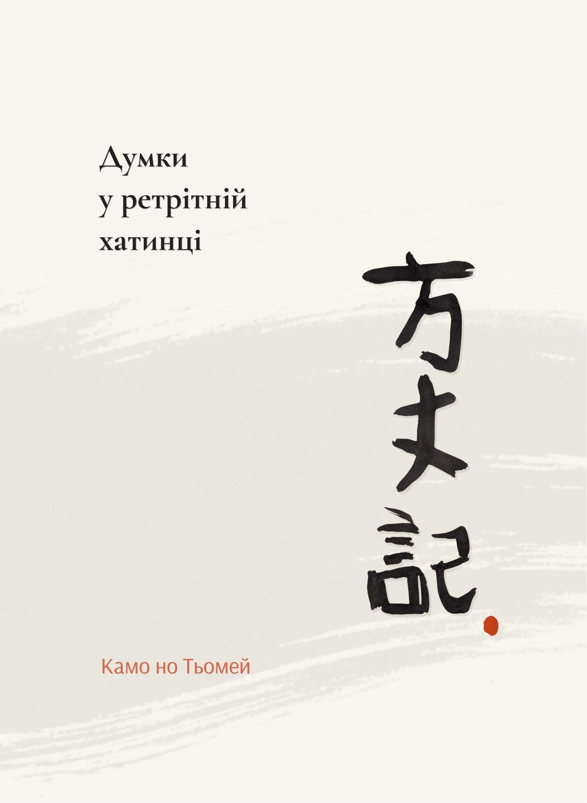
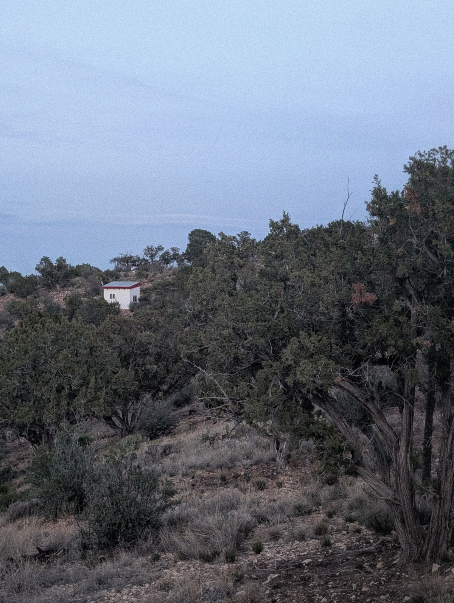
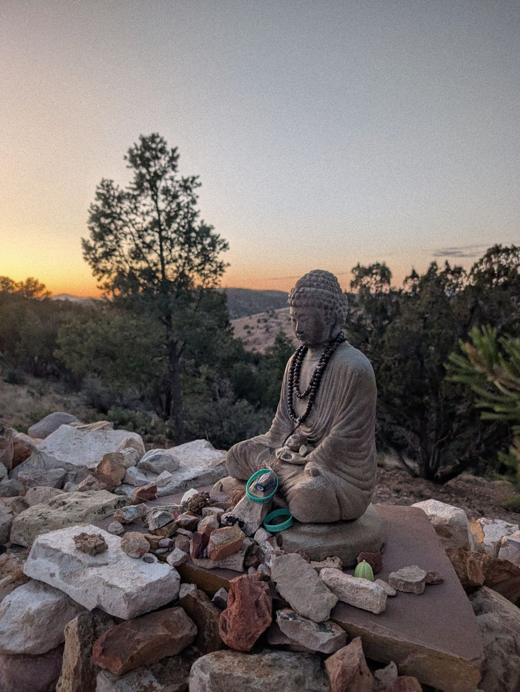
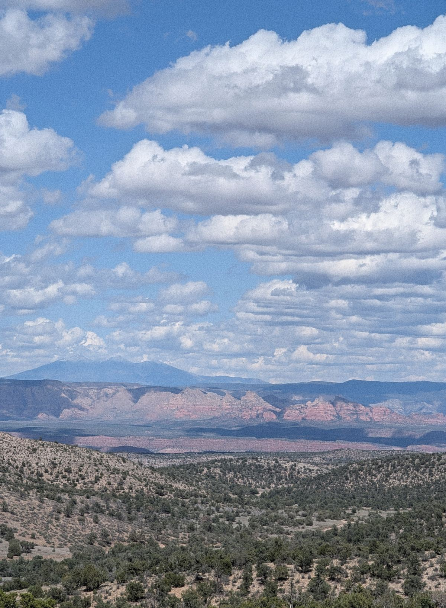
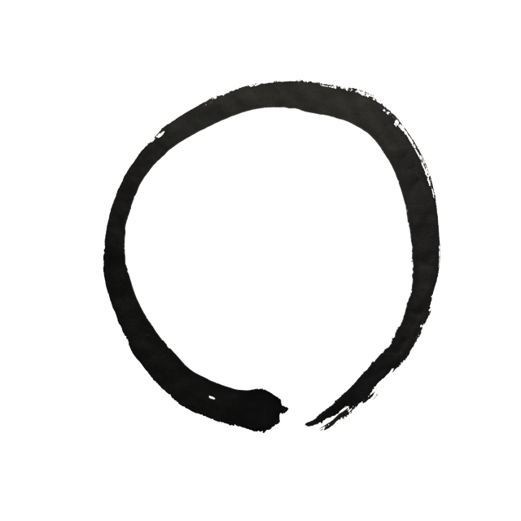

Ця книжка безкоштовна. Якщо вона вам цінна, ви можете підтримати тих, хто захищає Україну.
Передмова
У буддизмі правильна мотивація — фундамент практики, її найважливіша частина.
Зокрема, розвивають зречення — мотивацію відвернутися від турбот самсари до спокою нірвани. Щоб розвити в собі зречення, практики буддизму медитують на непостійність, страждання самсари, цінність присвячення себе практиці, і закон причинно-наслідкових звʼязків. Саме ці теми розкриває класичний текст, переклад якого я для вас представляю.
Ходзьокі — Думки у ретрітній хатинці — це поема, яку написав Камо но Тьомей у тринадцятому столітті в Японії. Проте вона відчувається дуже актуальною і сучасною, особливо для українців. Відчуття кінця світу, яке так багато людей проживають зараз, — воно було саме таким і за життя автора.
Дійсно, світ при всій своїй непостійності ніскільки не змінюється.
Тим важливіше послання цієї поеми — заклик до спокою, до зосередження на практиці, до слідування Шляхом.
Я щиро бажаю, щоб в Україні розквітала справжня практика Дгарми і були всі умови для неї. Я присвячую свій переклад саме цьому.
Подяка
Дякую Метью Ставросу за чудовий англійський переклад, з якого я працював. Я зустрів його книжку в книгарні, відкрив на випадковій сторінці — і відтоді ось уже шість місяців щоденно до неї повертаюсь. Робота над цим текстом стала для мене справжньою практикою.
Дякую Ані Ігнатовій за вичитку, відгуки і за те, що ти є в моєму житті.
Дякую усім моїм Вчителям Дгарми. Завдяки їхній доброті моє зречення поглиблюється.
Дякую ЗСУ за те, що Україна досі існує.
Зречення
Спочатку зречення було для мене страхом і тугою.Я шукав собі точки опориі дивився, як вони всі розсипалися й танули на очах.
Потім я бачив зречення як процес дорослішання.Я грався в іграшки самсари,і з часом їхній чар і мій інтерес до них стиралися.
Тепер я бачу зречення як бажання спокою.Я ясно бачу, що щастя неможливо знайти ніде,крім як усередині.Все, що я хочу, — це відвернутися від ілюзорного світу.
Артем Онучін
написано під час роботи
над перекладом «Думки у ретрітній хатинці»
2026
Думки у ретрітній хатинці
Переклад з англійської — Артем Онучін

«Ретрітна хатинка»
На фотографії зображена ретрітна хатинка в буддійському центрі Garchen Buddhist Institute серед пагорбів Арізони. У таких хатинках сучасні йогіни роблять трирічні ретріти, у яких вони усамітнюються і присвячують себе практиці. Розмір такої хатинки — три на три метри, саме як ходзьо, ретрітна хатинка самого Камо но Тьомея.
Ця поема — це думки, які автор записав у своїй хатинці. Цілком імовірно, що сучасні йогіни можуть мати схожі думки.
Пролог
Потік ріки ніколи не зникає,вода ніколи не буває однаковою.
Бульбашки пливуть на поверхні течії,лопаються, виникають знові ніколи не тривають.
Вони — як люди і їхні оселі.
У нашій коштовній столиціпрекрасні будівлі стоять у ряд,їхні гребні змагаються за першість.
Доми еліти — ніби були тут вічно,але розпитай — і переконаєшся:дуже рідко трапляються будинкиз довгою історією.
Одного року дім руйнується,наступного — відбудовується,зрештою великі домизмінюються на доми поменші,саме як люди,що живуть у них.
Це місто і громада в ньому здаються незмінними.Проте з поміж двадцяти чи тридцяти людей,яких я знав колись тут,досі залишились один чи двоє.
Ввечері люди помираютьі вже вранці народжуються інші,саме як бульбашки в річці.
Без імені:одні конають, інші народжуються.Звідки і куди вони ідуть?
І всі ці тимчасові, невідомі оселі —для кого і навіщопрагнути їх зробитиприязними для сприйняття?
Господар та його оселя —це як росинка на квітці повію.Хто з них загине швидше?
Часом роса випаровується,а квітка залишається.Та без сумніву квітка звʼянепід ранковим сонцем.
Дуже рідко краплятримається на зівʼялій пелюстці.У будь-якому разідо вечора росинка щезне.
Пожежа в епоху Анґен
За сорок весен і осенейвідтоді, як я зрозумів суть буття,я побачив чимало жахливих речей.
Давно, однієї ночі,зірвався лютий вітер.
Це було в двадцять восьмий день,у четвертий місяць,на третій рік епохи Анґен.1
Вогонь почався на південному сході столиці,ввечері, близько восьмої години.Потім він рушив на північний захід.
Зрештою діставсяВрат Судзаку Імперського Палацу,Великої Зали Держави,Імперського Університету,Міністерства Внутрішніх Справ.
В одну ніч усе це перетворилось на попіл.
Кажуть,пожежа почалася в домі для інвалідівна перехресті вулиць Хіґучі й Томінокодзі.
Вітер вів лихо туди і сюди,живлячи полумʼя, що розійшлось врізнобіч.
На відстані будівлі вкрилися димом.Зблизька земля стала морем горіння.Небо, повне жару,сяяло темно-червоним,відображало пожежу внизу.
Язики полумʼя,погнані вітрами шаленими,стрибали по всьому місту, наче літали.
Ті, кого вони схопили —що вони могли відчувати?
Хтось падав додолу, здоланий димом.Інші зникли миттєво, зʼїдені полумʼям.
Більшість не змогли врятувати навіть себе —що вже казати про їхнє майно.
Стільки втратилося:усі скарби світу стали попелом.
Доми шістнадцяти панів і безліч інших згоріли.Це — третя частина столиці.Декілька тисяч чоловіків і жінокзагинули.Безліч коней та інших тваринпомерли.
Будь-що ми робимо в нашому життіне має жодного сенсу.Проте тратити скарб і багатство на те,щоб збудувати будинкив цій небезпечній столиці —це особлива дурниця.
Смерч в епоху Джішо
В четвертий рік епохи Джішо,десь в двадцять четвертий деньчетвертого місяця,зʼявився великий смерчна перехресті вулиць Накамікадо та Кьоґоку.
Він пройшов крізь містодо району Рокудзо.
Нещадно зруйнував три чи чотири квартали,не залишивши цілим жодного дому —ані малого, ані великого.
Одні будівлі були знищені дощент,від інших залишився лише каркас.
Шквал зривав верхи ворітта розкидав сміття на декілька кварталів.
Він зносив огорожі між садибами,поєднуючи ділянки в одну.Безліч господарського добра злетіло в небо.
Дахи хат із дерева і очеретутанцювали шалено,мов сухе листя взимку.
Пил, наче дим, закрив весь краєвид.Вітер гудів так гучно,що голоси губились у реві.
Я про це згадую як про вітер із пекла.
Не тільки будинки були знищені —багато людей втратило життя,намагаючись урятувати дім.
Я почув дедалі більше плачу від розпачу,коли смерч пішов на південний захід.
Інколи смерчі тут трапляються,але такого ще не було —настільки лютого.Він був незвичним.
Я не можу перестати думати,що це булолихе знамення.
Перенесення столиці
Шостого місяця саме того рокураптом столицю перенесли.Цілком неочікувано!
Кажуть,столицю заснували за імператора Саґадесь чотириста років тому.
Перенести столицю — серйозна справа,це не варто робити з примхи!
Все сталося надто раптово,усі були стривожені.
Зрештою, коли його величністьпереїхав до нової столиці —у Намба, у провінції Сетцу, —всі міністри та еліта мали слідувати.
Хіба хтось, хто служив при дворі,міг залишитися?
Усі, хто цінував свій статус,усі, хто залежав від опіки господаря,першими поїхали на нове місце.
Усі, хто упустив свій шанс,хто не зміг отримати посади,хто збився зі шляху,залишились у журбі.
Доми тих,хто поїхав змагатися за впливовість,щоденно занепадали.
Деякі з цих домів розібрали,їхні матеріали відправиливниз по річці Йодо.Там, де вони стояли,враз розляглися порожні поля.
Люди і їхні цінності змінилися.Вони почали їздити верхи на коняхзамість елегантних волових возів.
Усі шукали земліна південно-західному узбережжі —ніхто не хотів маєткув північно-східних провінціях.
Якось тоді я мав нагоду поїхатидо нової столиці в Сетцу.
Я побачив, наскільки там було жахливо тісно —не було й місцянормально спланувати квартальну забудову.На півночі — високі горби,на півдні — глибоке море.
Рев хвиль ніколи не припинявся.Пориви морського вітрубули особливо жорсткі.
Імператорський палац, схований в горах,нагадував старовинний стиль Мароз усім шармом провінційної простоти.2
Тим часом день за днем будинки розбирали.Їхні матеріали перегатили річку.Я дивувався:де саме ці доми збудують зновуі чи буде для цього місце.
Стільки порожніх ділянок —і так мало нових споруд!
Стара столиця вже занепадала.Нову столицю ще треба було збудувати.
Мов хмари в небі,все пливло навмання.
Ті, хто раніше жив на місці нової столиці,були в розпачі від втрати земель.Ті, хто переїхав, були роздратованінеобхідністю будувати житло знов.
Ті, кому по чину належало їздитиу розкішних возах уздовж проспектів,почали їздити верхи.Ті, хто раніше носиввитончені придворні шати,тепер були в простому одязі.Культура столиці змінилася теж —втратила колишню вишуканістьі стала по-військовому стриманою.3
У цих змінах бачили провісників хаосу.І дійсно,з часом розгубленість і страждання охопили всіх.
Авжеж,голоси обурення стали настільки гучними,що тієї ж зими столицю перенесли назад —туди, де вона й була.
Але всі ці розібрані доми — що було з ними?Їх дуже складно перебудувати знов.
Кажуть,що колись, дуже давно,мудрі володарі правили країноюзі співчуттям до людей.Палац свій крили простою соломою,і навіть карнизів не підрівнювали.
Голод епохи Йова
Пізніше стався голод, що тривав два рокиі приніс невимовне горе.
Здається, це було в епоху Йова.Так давно, що я вже забув коли.
Навесні й улітку — сонце було ярим.Восени й узимку — урагани і повіддя.
Жахливі лиха йшли одне за одним,доки всі посіви не загинули.
Люди орали навесні та саджали влітку.Все без результату.
Святкування, яке приходить з урожаєм,було втрачено.Зробити запаси на зиму було неможливо.
Всюди, у всіх провінціях,люди залишали доми і господарства.Хтось тікав у гори.
Було присвячено багато молитов і ритуалів.Все без результату.
Столиця завжди залежала від навколишніх сіл,і коли постачання провізії припинилося,всі втратили гідність.
Люди залишили всі надіїі почали продавати своє майно.Не було жодного винятку.
У торгівлі, яка майже зійшла нанівець,зерно стало коштувати дорожче за золото.
Жебраки вишиковувалися вздовж вулиць,і скрізь було чути їхній розпач.
Цей рік закінчився жалюгідно.
Всі сподівалися,що новий рік принесе відновлення,але все стало тільки гірше, коли почалася чума.
Час минав, і люди помирали від голоду.Ми почувалися як риби у висихаючій водоймі.
У капелюхах і гетрах,вишукано одягнуті пани й пані,ходили від будинку до будинкута щиро просили милостиню.
Я сам бачив на власні очі,як заморені голодом люди,раптом просто валилися.
Висушені, закляклі тілабули розкидані по вулицях.
Вони сповзали вздовж стін будинків.
Оскільки тіла ніхто не прибирав,стояв жахливий сморід.
Було нестерпно дивитися на ці гниючі трупи.
Береги річки були завалені тілами.Тому, коні і вози не могли проїхати.
Коли забракло робітників і лісорубів,не стало навіть дров.
Втративши все інше майно,деякі люди почали розбирати власні домиі нести деревину на ринок.Та, на жаль, як я чув,цих грошей вистачалохіба на один день їжі.
Мене засмучувало бачити дрова,вкриті червоною фарбою,з краплями золота й срібла.Я розпитав довкола та дізнався,що люди вдиралися до старих храміві крали статуї Будд.Вони віддирали оздобленняі ламали його на шматки.
Який страшний жаль —народитися в такийгрішний часі побачити ці жахи.
Серце розривається.
Серед закоханих пар ті, хто любив глибше,завжди помирали першими.Чи чоловік, чи жінка — вони жертвували собою,віддаючи своїм коханимту мізерну поживу, яку мали.
Звісно, у родинах —батьки завжди гинули першими.Я бачив немовлят біля материнських грудей,які не розуміли, що їхні матері вже померли.
Монах Рюґьо був імператорським скарбникомта настоятелем храму Дзінсонʼїнмонастиря Ніннадзі.Йому було невимовно жальнезліченних помираючих.
Коли він бачив когось при смерті,то малював священний склад «А» на їхніх чолах,щоб спрямувати їх до спасіння.4
У четвертий і пʼятий місяці він нарахувавсорок дві тисячі триста мертвихна вулицях столиці.Від Ідзьо на півночі до Кудзьо на півдні.Від Кьоґоку на сході до Сузаку на заході.
І це число тільки за ці два місяці,не включаючи тих, хто помер раніше чи пізніше.Окрім того, безліч людей померли понад річкоюу передмісті Сиракава на заході від столиці.Вздовж семи доріг, що вели до провінцій,мертвих тіл було іще більше.
Я чув, що подібний голод бувв епоху Чошо за імператора Сутоку.Я нічого про це не знаю.
Що я можу сказати —у своєму житті я не бачив нічого жахливішогоза цей голод,ані до нього, ані після.
Землетрус в епоху Ґенрʼяку
На другий рік епохи Ґенрʼякутрапився великий землетрус,небаченої сили.
Гори кришились,наповняючи річкиуламками.
Моря здіймались,поглинаючи сушу.
Земля розверзаласяй із нею текла вода.
Валуни зривалисяй котились у долину.
Човни безпораднохиталися на хвиляхкрай берега.
Коні на вулицяхспотикались при ходьбі.
У всій столиці не лишилосяжодного неушкодженогохраму чи пагоди.
Пил і попіл піднімався.Дим всюди стелився.
Земля йшла хвилями,будинки тріскалися.
Гуркіт стояв,гучний, як грім.
Ті, хто залишились всередині,загинули під уламками домів.Тих, хто тікав, поглинула земля.
Не маємо крил і не можемо злетіти.Лише дракони линуть поміж хмар.Отже, землетрус як цей —найстрашніше з лих.
Син чиновника, років шести-семи,побудував собі маленьку халабудунавколо земляного валу.Він грався в ній,коли вал рухнув.
Похований під уламками,розчавлений і безформний —його очі вискочили з очниць.
Його батьки обняли бездиханне тіло,їхній невгамовний плачбуло неможливо витримати.
Було боляче дивитися, як мужній чоловік,охоплений горем, лишав гідністьі ридав над втратою сина.
Найгірший поштовх з часом минув,але повторні поштовхи тривали.
Кожен із двадцяти чи тридцятиповторних поштовхів,у звичному часі був би моторошним сам собою.Тільки через десять днівінтенсивність почала зменшуватися.
По чотири по пʼять поштовхів,потім по два по три,і потім один поштовхкожні декілька днів.
Це тривало десь три місяці.
Із чотирьох елементівнайчастіше вода, вогонь і повітряприносять горе.Лише зрідка земля чинить лихо.
В епоху Саїко був великий землетрус,який, окрім інших руйнувань,зніс голову Великому Буддіу храмі Тодадзі.І все ж, цей землетрус був набагато слабшийза землетрус епохи Ґенрʼяку.
Усі висловили жалюгіднінаміри зосередитися на Дгармі,бо землетрус змусивподивитись у власні серцяі побачити марноту мирських турбот.
Але минули дні, місяці і потім роки.Ніхто не залишився усвідомленим.
Де знайти спокій?
Життя в цьому світі складне.
Як я і говорив,люди і їхні оселі,порожні й непостійні.
Очікування посади і статусуприносять безліч турбот і тривог.
Незначна людина,яка живе в тіні сильних світу цього,не може виявити радість, коли радіє,чи плакати, коли сумує, —вона не діє вільно.
Мов горобець біля гнізда яструба,вона трясеться від страху.
Бідна людина, що живе в тіні багатих:її бідність приносить сором.
Вранці чи вночі,коли вона приходить і відходить,вона мусить бути запобігливою.
Коли вона бачить, як рідні чи прислугазаздрять багатим сусідам,а ті зневажають їх —вона не знаходить спокою.
Коли живеш в людному місці,нема куди тікати від пожежі.
Коли живеш на околиці,важко кудись добиратисяі є небезпека злодіїв.
Ті, хто має владу, — жадібні!З тих, хто живе осторонь, глузують.
Ті, хто має достаток, мають багато страху.Все, що мають бідні, — це гіркота буття.
Коли хтось покладається на інших —стає залежним.
Коли хтось дбає про інших —стає привʼязаним.
Коли хтосьпідлаштовується до мирських очікувань —неодмінно страждатиме.
Тих, хто не підлаштовується, —вважають божевільними.
І я питаю себе:
де в цьому світі жити і як?Де знайти відпочинокі спокій у власному серці?
Полишаючи світ
Довгий час я жив і працюваву господарстві моєї бабусі з боку батька.5
Коли вона померла, сімейні звʼязки розірвалисяі моє життя почало занепадати.
Хоча це місце було наповнене спогадами,я мусив його залишити.
Зрештою, десь у тридцять роківя обрав своїм домом маленьку хатку.
Хоча вона була в десять разів менша,ніж дім, в якому я народився,мені було достатньо місця.
Вона була трохи більша, ніж халупа.Це не було повноцінним будинком.
Стіни були із глини. Воріт не було.
Я використовував стовпи із бамбукащоб спорудити навіс для воза.
Коли дув вітер, коли падав сніг,вся ця конструкція здавалася дуже хиткою.
Річка була поручі повені були постійною загрозою.Також бували злодії.
Я прожив понад тридцять роківз серцем, важким від турботцього недоброго світу.Весь той час я усвідомлювавскоротечність благих умов.
Потім, в пʼятдесяту весну,я полишив дімі повернувся спиною до світу.
Врешті, в мене не було ні дружини, ні дітей.Нічого, що могло би тримати мене.
Я не мав ні посади, ні прибутку.Жодних мирських привʼязок.
Наступні пʼять весен і осенейя взяв прихисток в хмарах гори Огара.

«Амітабга»
На фото зображена статуя Будди Амітабги в ретрітному центрі Garchen Buddhist Institute.
Камо но Тьомей був практиком буддизму Чистих Земель — школи, що зосереджується на зреченні і відданості Будді Амітабзі. Її послідовники вірять: якщо постійно повертати розум до нього і повторювати імʼя Будди, можна переродитися в Чистій Землі Блаженства — місці без страждання, найкраще пристосованому для практики. Амітабга повʼязаний із західним напрямком, тому автор під час практики повертається обличчям туди.
Будда Амітабга важливий і для сучасних буддистів — вісім століть по тому.
Моя маленька хатинка
Коли мені виповнилося шістдесят років —росинка мого життя почала щезати —я збудував собі хатинку, мій останній прихисток.
Як лісоруб, що будує тимчасовий шалаш.Як старий шовкопряд,що пряде свій останній кокон.
Моя нова хатинкане була й у сто разів менша за попередню.
Чим я старше, тим менше моя оселя.
Ця хатинка унікальна: ходзьо,що означає будинок три на три метри,не більше двох метрів у висоту.
Я збудував її на випадковому місці,не претендуючи на власність землі.
Я спорудив її просто —скріпив стики металевими скобами.Таким чином я легко можу перевезти хатинку,якщо мені доведеться кудись переїжджати.
Перебудувати знов також не буде важко.Вся конструкція вміщається у два вози,і заплатити треба буде лише візникові.
Я заховав себе глибоко в горбах Гіно.
Уздовж південної стіни моєї хатинки,я спорудив тимчасовий навіста бамбуковий настил.
На заході я поставив вівтар.Я повісив зображення Амітабги на західній стіні.6Коли вечірнє світло заливає хатинку,чоло Амітабги сяє теплими променями.
На дверцятах вівтарязображення бодгісатвСамантабгадри і Ачали.7
В північній частині на антресолі я поставивтри чи чотири обтягнуті шкірою кошики.
В них я тримаю свої книжки з поезією і нотами,а також різні тексти,такі як «Основи переродження у Чистих Землях»Ґеншина.
Поруч — лютня та японська цитра —розбірні для компактності.
На сході я поклав сушену папоротьв якості ліжка.Далі на східній стіні відкривається вікно,під ним невеличкий відкидний стіл для письма.
Навколо подушки — вогнище.Там я палю хмиз.
На північ від хатинкия обгородив маленьку ділянкунизеньким живоплотом.На ній я вирощую лікарські трави.
Така моя тимчасова оселя в цьому світі.
На південь від хатинкитруба подає воду в камʼяну чашу.
Ліси навколо дають вдосталь дров.
Ці горби називаються Тояма.
Долина внизу заросла лісами,але на заході, в напрямку,куди я повертаю обличчя під час практики,я маю ясний краєвид.
Навесні,я бачу як цвітуть квіти гліцинії,пурпурні, як хмари Чистих Земель Заходу.
Влітку,кування зозуль направляє мою увагудо гірського перевалу,що нагадує мені про смерть.
Восени,на заході сонця плач цикад заповнює мій слух.Вони оплакують цей ефемерний світ.
Взимку,сніг покриває землю.Він накопичується, а потім тане.Саме як кармічні перешкоди та їхнє очищення.
Коли в мене немає настроюспівати молитви і читати сутри —я відпочиваю.
Я можу дозволити собі бути лінивим:ніхто не зупинить мене.Жодних друзів, які могли б мене засудити.
Хоча я не взяв обітницю мовчання,те, що я на самоті,означає, що мені немає нічого сказати.
Нескладно тримати святі обітниці,коли так мало можливості їх порушити.
Коли вранці мене наповнює відчуття туги,як у вірші «Білі Хвилі за Кормою» —я сідаю дивитися,як човни пливуть по річці біля Оканоя,і пишу в стилі Маншамі.
Коли ввечері дує сильний вітері змушує листя дерев кацура танцювати,я думаю про річку Сюньяні граю на лютні в стилі Мінамото но Цуненобу.8
Коли мені хочеться,я граю «Пісню Осіннього Повіву»для вітру поміж сосен,чи «Течію Води» для бульбашок в потоці.
Я не вмілий музикант,але я не граю,щоб втішити слух інших.
Я граю і співаю один,наповнюючи лише своє серце.
Моє безтурботне життя
Є ще одна хатинка у підніжжі гори —це дім лісоруба.
Іноді його син приходить до мене.
Буває, немає чим зайнятися,і ми йдемо на прогулянку.
Йому шістнадцять, мені шістдесят.
Хоча різниця у віці велика,ми маємо спільні радощі.
Ми витягуємо стебла ковилиі збираємо польові квіти.
Громадимо бруньки ямсуі щиплемо водяну петрушку.
Чи спускаємося до залитого поля,збираємо рисові колоскиі надаємо їм різних форм.
Коли погода ясна,ми здираємося на вершину пагорбаі дивимося на небонад моїм колишнім домом.
Звідси можна бачити гору Карата,села Фушімі, Тоба і Хацукаші.
Ніхто не здатний затьмарити нашу радість,бо ніхто не володіє красою цих місць.
Якщо в нас є сили,якщо хочемо пригоди десь далеко,ми мандруємо на схід через пагорби.Ми проходимо Суіяму, Касаторі й Ішиму,щоб зробити офіру в храмі Ішіяма-Дера.
Або перетинаємо поля Авазу,щоб відвідати будинокповажного Семімару.
Іноді ми переходимо через ріку Танакамі,щоб віддати шану на могилі Сарумаро.
Коли ми повертаємося додому,ми милуємося квітами сакуричи барвами осіннього листя,залежно від пори року.
Ми ламаємо молоді пагони папороті9і збираємо горіхи —щоб піднести Буддам або для себе.
Коли ніч тиха,я думаю про тих, хто відійшов,під лункий хор мавпз мокрими від сліз рукавами.
Світлячки у кущахнагадують мені самотні рибальські вогникиз острова Макіношіма.
Дощ на світанку,ніби буря, що зриває листя.
Туркотіння рудих фазанівнагадує мені голоси моїх мами й тата.
Коли гірський оленьпідходить до мене без страху,я розумію, наскільки далеко я відійшов від світу.
Жаринки, які я ворушу у вогні, —це мої друзі.Вони, як захід сонця,провіщають сутінки мого життя.
Гори можуть бути грізними,але мені подобається ухкання сов.
Кожна пора року чарівна по-своєму.
Коли я сюди приїхав,я не планував залишатися надовго.
І ось минуло вже пʼять років,а я все ще тут.
Ця занепала тимчасова оселястала моїм домом.
У стрісі — загниле листя.Весь дах покрився мохом.
Іноді до мене доходять звістки зі столиці.Поки я був тут, у пагорбах,багато вельможних панів загинуло.
Серед людей нижчого стану —просто неможливо порахувати померлих.
Скільки домів було знищенолише від невпинних пожеж!
А тут нічого не трапляється —в моїй тимчасовій хатинці.
Попри те, яка вона мала,у ній достатньо місця,щоб спати вночіі сидіти вдень —задосить для однієї людини.
Рак-самітник вибирає собі маленьку мушлю,бо дуже добре знає себе.
Скопа живе на скелястому березі,бо боїться людського світу.
Саме так і я:я знаю себеі я знаю світ.
Я не бажаю нічогоі не підлаштовуюся під очікування.
Тиша — це все, чого я хочу.Не мати турбот — це достатнє для мене щастя.
Люди в цьому світі не будують будинкипід свої потреби.
Вони будують для дружин, дітей, прислуги.
Дехто будує,щоб вразити своїх друзів і знайомих,або щоб дати притулок панам і вчителям.
Звичайно, дехто будує будинки,щоб тримати там свій скарб:коней і волів.
Я збудував оселю лише для себе.
Ви можете запитати себе, чому.
Але у світу є свій шлях.В мене — мій.
В мене немає супутника чи слуги.
Якщо б я збудував собі хатинку побільше,кого би я в ній привітав?З ким би я її розділив?
Опора на себе
Люди цінують у своїх друзяхбагатство та приємне спілкування.
Щире співчуття і чесність —не надто.
Тоді чому б натомість не подружитисяз музикою та природою,з місяцем та квітами?
Прислугу турбують тільки нагороди й покарання.Вона лише шукає щедрих милостей.
Моє тіло — сукупність дрібних частинок,і хоча воно ненадійне й тимчасове,я не ховаюся в марній бездіяльності.
Якщо треба щось зробити,чому б не бути слугою самому собі?
Звичайно, для цього треба докласти зусиль,але це краще, ніж бути комусь зобовʼязаним.
Якщо треба кудись потрапити — я йду пішки.Звісно, це може бути важко,але не настільки важко,як постійно турбуватисяпро коня чи про волів та віз.
Моє тіло існує для двох речей:мої руки — щоб працювати,мої ноги — щоб рухатися в просторі.
Я знаю свої межі:я відпочиваю — коли мені треба,і працюю знову — коли хочу.
Я навантажую себе, але не до краю.
Тому навіть коли я втомлений —я в спокої.
Завжди ходжу,завжди працюю —розвиваю міцність духу.
Навіщо відпочивати, коли це не треба?
Це гріх — завдавати іншим клопотів і страждань.
Хіба не кращеспрямовувати енергіюна щось інше?
Простота
Той самий принцип опори на себея застосовую до їжі та одягу.
Я обходжуся тільки тим, що можу здобути сам.Мій одяг — грубі тканини з волокон гліцинії.Ковдра зроблена з конопель.
Ніжні пагони з полів та ягоди з пагорбів —уся пожива, яка мені потрібна.
Те як я виглядаю не має значення,бо я не перетинаюся з людьми.
Чим простіша моя їжа,тим краще вона смакує.
Звісно, я не знаю, як воно у тих,хто насолоджується багатством.
Я лише порівнююсвоє нинішнє та колишнє життя.
Покинути світ, відкинути турботи плоті —це жити без гіркоти і страху.
Я віддаю своє життя милості небесне маючи жалю і туги.
Я бачу своє тіло ніби хмару, що пливе по небу —не чіпляюся за нього і не відрікаюся.
Я знаходжу незрівнянну радістьу тому, щоб спочити головою на подушці.
Дивитися на красу навколо —це є задоволення.
Самотнє життя
Три сфери буття:Минуле, теперішнє і майбутнє —поєднуються в моєму серці.
Воли та коні, палаци та маєтки —якщо серце не знає спокою,мирське багатство не приносить задоволення.
Я люблю свою самотню оселю,цю просту маленьку хатинку.
Іноді я навідуюся до столиці.Там я соромлюся того, що виглядаю як жебрак.
Але коли я повертаюся додому,мені жаль тих, хто залишивсяпривʼязаним до світу.
Якщо ви сумніваєтеся в моїй щирості,подумайте про птаха та рибу.
Ніхто не ставить під сумнівлюбов птаха до лісу,не маючи досвіду того, як птах відчуває ліс.
І ніхто не ставить під сумнівлюбов риби до води,не маючи досвіду того, як риба відчуває воду.
Так і з самотою:як можна зрозуміти мою любов до самоти,не маючи досвіду самотнього життя?
Спадний місяць
Місяць мого життя спадає,мʼяко опускається за пагорби.
Будь-якої митія можу відійтидо ріки Вічності.
У чому користьусіх цих роздумів?
Будда вчив непривʼязаності.Отже,сама моя любов до ретрітної хатинки —це привʼязаність.
Мені більше не вартозаписувати марні думки.
Досвітня тиша
У досвітній тишія розмірковую.
Я ставлю собі питання:
Ти покинув світі пішов у ліс,щоб заспокоїти розумі слідувати Шляхом.
Але, хоч зовні ти виглядаєш як йогін,серце твоє чорне від отрут.
Ти збудував собі оселюяк у Вімалакірті.
Але практика твояслабша, ніж у Чандапандаки.10
Хіба тебе не хвилюєтвоя темна карма?
І хіба твій концептуальний розумне доводить тебе до божевілля?
Ці питання не мають відповіді.
Натомість я просто співаю хвалу Амітабзі.
І потім —тиша.
Написано монахом Ренʼіном
у хатинці біля Тоями,
приблизно в останній день третього місяця
другого року
епохи Кенрʼяку.

Примітки
- 1
«Це було в двадцять восьмий день,
у четвертий місяць,
на третій рік епохи Анґен.»В Японії час рахували епохами (нен-ґо) — періодами від кількох місяців до кількох десятиліть. Нову епоху оголошували зі сходженням імператора, а також після лихих знамень чи стихійних лих: вважалося, що зміна назви принесе оновлення.
Анґен тривала з 1175 до 1177 року. Третього її року, про який пише Тьомей, пожежа знищила третину столиці. Далі — смерч, голод, землетрус, перенесення столиці, війна Ґенпей (1180–1185) між Тайра і Мінамото. Назви епох змінюються — Анґен, Джішо, Йова, Ґенрʼяку — але оновлення не приносить жодна.
Глибше розпадався весь лад тогочасного життя. Епоха Хейан (794–1185) — чотири століття правління придворної аристократії; життя оберталося навколо столичного палацу, поезії, церемоній, естетичних тонкощів. Цей світ доживав останні роки. На зміну йшла інша Японія — військова, провінційна, з самураями як новою панівною верствою. Після перемоги Мінамото у війні Ґенпей запанував сьоґунат — військове правління, що тривало майже сім століть.
Тьомей жив на цьому зламі. Те, що ми бачимо як чіткий історичний рубіж, він проживав щодня: світ, у якому він народився і виріс, руйнувався на очах. Звідси наскрізне відчуття непостійності. Він пише понад сорок років по тому, але описує пережите: застав ці події юнаком і зрілим чоловіком, бачив згарища і трупи на вулицях.
↩ повернутися - 2
«Імператорський палац, схований у горах,
нагадував старовинний стиль Маро
з усім шармом провінційної простоти.»«Стиль Маро» (Кі-но-Маро-доно) — тимчасова резиденція з необтесаних колод, нашвидку зведена на Кюсю 661 року. Це насмішка, захована під компліментом.
Він має на увазі, що це зруб із нетесаних колод, а не палац.
↩ повернутися - 3
«Ті, кому по чину належало їздити
у розкішних возах уздовж проспектів,
почали їздити верхи.
Ті, хто раніше носив
витончені придворні шати,
тепер були в простому одязі.
Культура столиці змінилася теж —
втратила колишню вишуканість
і стала по-військовому стриманою.»Тут Тьомей описує не моду, а тривожні знамення. В епоху Хейан вигляд і пересування знаті регулював детальний етикет. Воловий візок (ґіс-ся) був ознакою аристократичного статусу — повільний, церемоніальний, лише для рівних столичних вулиць.
Кінь і простий одяг означали інше — підготовку до війни. Кінь давав рухливість, простий одяг був похідним вбранням.
У шостому місяці того самого 1180 року, коли переносили столицю, принц Мочіхіто закликав до зброї проти Тайра. Почалася війна Ґенпей (1180–1185). Тайра, які й перенесли столицю до Фукухари, програли її; запанував сьоґунат Камакура.
Тьомей пише про 1180 рік з відстані тридцяти років, коли наслідки вже відомі.
↩ повернутися - 4
«Коли він бачив когось при смерті,
то малював священний склад «А» на їхніх чолах,
щоб спрямувати їх до спасіння.»Склад «А» (अ) — перший знак санскритського письма.
Монах Рюґьо був практиком школи Шінґон, японської ваджраяни. У Шінґон і ширше у ваджраяні склад «А» має особливе значення: вважається, що це звук природи реальності. Рюґьо писав його на чолах померлих, щоб установити для них звʼязок з Дгармою.
↩ повернутися - 5
«Довгий час я жив і працював
у господарстві моєї бабусі з боку батька.»У цій главі Камо но Тьомей посилається на свої карʼєрні невдачі.
Він народився в Кьото 1155 року в родині шінтоїстського священника Каноучі-но-Тадану, голови храму Шімоґамо — одного з найдавніших і найшанованіших святилищ столиці. Посада була спадкова, і Тьомей зростав з очікуванням, що успадкує батькове місце.
Батько помер, коли Тьомей був ще молодий, і головою храму призначили далекого родича. Тьомей став відомим поетом, увійшов до кола придворних літераторів, отримав призначення в Імператорське поетичне бюро. У 1204 році звільнилася священицька посада у спорідненому храмі Тадасу; відрекомендований імператором, Тьомей міг повернутися до жрецької карʼєри, але призначення знову зірвали родинні інтриги.
Більше він не намагався нічого змінити. Невдовзі прийняв буддистський постриг під чернечим іменем Рен-ін. Спершу оселився в горах Огара на північ від Кьото, потім перебрався в Гіно — південно-східні передгірʼя столиці, де власноруч збудував маленьку хатинку. Там 1212 року, у шістдесят років, написав цей текст за чотири роки до смерті.
↩ повернутися - 6
«На заході я поставив вівтар.
Я повісив зображення Амітабги на західній стіні.»Амітабга («Безмежне Світло», яп. Аміда) — Будда заходу, володар Чистої Землі (санскр. Сукхаваті, яп. Дзьодо). За його обітом кожен, хто з вірою закличе його імʼя, переродиться в Чистій Землі — світі без страждань, де умови для пробудження ідеальні.
Віра в Амітабгу — основа японського буддизму Чистої Землі. Тьомей був практиком цієї школи, тож напрямок заходу й образ Амітабги мають для нього особливе значення. Туди він поставив вівтар, туди повертається обличчям, коли практикує; квіти гліцинії пурпуровим кольором нагадують йому Чисту Землю Сукхаваті.
За традицією Чистої Землі, у мить смерті Амітабга сходить із заходу на пурпуровій хмарі з бодгісатвами, щоб провести вмирущого в Сукхаваті (видіння райґо).
↩ повернутися - 7
«На дверцятах вівтаря
зображення бодгісатв
Самантабгадри і Ачали.»Самантабгадра («Цілковито Доброчесний», яп. Фуґен) — бодгісатва практики й діяння. Якщо Манджушрі уособлює мудрість, то Самантабгадра — її здійснення. У Лотосовій сутрі він зʼявляється на білому слоні з шістьма бивнями й обіцяє захист тим, хто береже сутру; так його зазвичай і зображають.
Ачала («Незрушний», яп. Фудо Мьоо) — гнівне божество, один з Пʼяти Царів Мудрості езотеричного буддизму. Зображають його грізним: меч у правій руці розрубує невігластво, петля в лівій звʼязує пристрасті, за спиною палає полумʼя. Його гнів спрямований на перешкоди до пробудження — невігластво, страх, привʼязаності.
Разом вони складають пару: миролюбний бодгісатва доброчесності й гнівний захисник, що усуває перешкоди.
↩ повернутися - 8
«Поруч — лютня та японська цитра —
розбірні для компактності.
…
Пишу в стилі Маншамі.
…
я думаю про річку Сюньян
і граю на лютні в стилі Мінамото но Цуненобу.»У хатинку Тьомей бере два інструменти: біва (лютня) і кото (японська цитра). Обидва повʼязані з аристократичною культурою Хейан і вимагають довгого вишколу.
Граючи на них, він порівнює себе з трьома поетами-музикантами:
- Маншамі (Самі Мансей, VIII ст.) — монах і поет, автор танки, де життя порівнюється з білою пінною стежкою за човном. Дивлячись на човни на ріці, Тьомей складає вірші «у стилі Маншамі».
- Мінамото но Цуненобу (1016–1097) — придворний поет і майстер лютні. Граючи «у стилі Цуненобу» під шум листя в кленах, Тьомей згадує «Пісню про лютню» Бай Цзюї.
- Бай Цзюї (772–846) — один з найбільших китайських поетів епохи Тан. Його «Пісня про лютню» розповідає про зустріч поета з музиканткою на ріці Сюньян.
- 9
«… щиплемо ковилу … бруньки ямсу … водяну петрушку … пагони папороті …»
Рослини, які Тьомей збирає з хлопчиком, — класична японська «гірська зеленина» (сансай), весняна й осіння їжа гірських мешканців:
- Ковила (цубана) — молоді пагони чіґая (Imperata cylindrica). Діти висмикували солодкі серцевини.
- Польові квіти (іванасі) — гірська повзуча рослина (Epigaea asiatica).
- Бруньки ямсу (мукаґо) — повітряні бульбочки японського ямсу (Dioscorea japonica) з пазух листя. Осіння їжа, з якої готують мукаґо-ґохан — рис із бульбочками.
- Водяна петрушка (сері, Oenanthe javanica) — одна із «семи весняних трав» (хару-но-нанакуса), які їдять на сьомий день нового року.
- Пагони папороті (варабі) — молоді закручені пагони папороті-орляка (Pteridium aquilinum). Збирають до розпускання листків, обробляють від гіркоти, додають до супів і рису.
- 10
«Ти збудував собі оселю
як у Вімалакірті.
Але практика твоя
слабша, ніж у Чандапандаки.»Вімалакірті («Бездоганна Слава», яп. Юіма) — головна постать однойменної сутри, одного з впливових текстів Махаяни. Він не монах, а заможний мирянин з міста Вайшалі: одружений, з дітьми, веде справи. Але мудрістю перевершує найвидатніших учнів Будди. Ключовий епізод: до його кімнати приходить понад тридцять тисяч бодгісатв із небесних світів, і кімната вміщує їх усіх, не розширюючись. Розмір кімнати — три на три метри; звідси й образ хатинки, до якої Тьомей рівняє свою.
Чандапандака — учень Будди, відомий тупістю: не міг завчити й рядка вчення. Будда дав йому просту практику — підмітати, повторюючи «витираю пил, витираю бруд», — і так Чандапандака досягнув архатства.
↩ повернутися
Джерела
- Виноски Метью Ставроса до його перекладу Hōjōki (Tuttle, 2024).
- Виноски Дональда Кіна до його перекладу Hōjōki: Anthology of Japanese Literature / An Account of My Hut
- Gissha (воловий візок)
Вікіпедія:
- Japanese era name
- Genpei War
- Heian period
- Empress Kōgyoku
- Fukuhara-kyō
- Shingon Buddhism
- Siddhaṃ script
- Kamo no Chōmei
- Amitābha
- Sukhavati
- Pure Land Buddhism
- Raigō
- Samantabhadra
- Lotus Sutra
- Acala
- Wisdom Kings
- Sami Mansei
- Minamoto no Tsunenobu
- Bai Juyi
- Pipa xing
- Sansai
- Imperata cylindrica
- Dioscorea japonica
- Oenanthe javanica
- Pteridium aquilinum
- Vimalakirti
- Vimalakirti Sutra
- Śuddhipanthaka
Колофон
- Переклад з англійської — Артем Онучін, з дозволу автора англомовного видання.
- Англомовне видання: Kamo no Chōmei. Hōjōki: A Buddhist Reflection on Solitude, Imperfection and Transcendence. Translated and annotated by Matthew Stavros. Tokyo: Tuttle Publishing, 2024.
- Редагування — Анна Ігнатова.
- Фотографії та каліграфія — Артем Онучін. Знято в ретрітному центрі Garchen Buddhist Institute.
- Це другий повний український переклад «Ходзьокі» — перший з англійської і перший за 92 роки, після перекладу Степана Левинського (Львів, 1934).
Видання поширюється на умовах ліцензії Creative Commons «Зазначення авторства — Некомерційна — 4.0 Міжнародна» (CC BY-NC 4.0).
© Артем Онучін, 2026.
